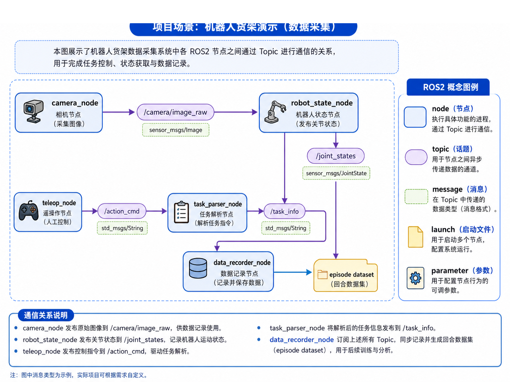
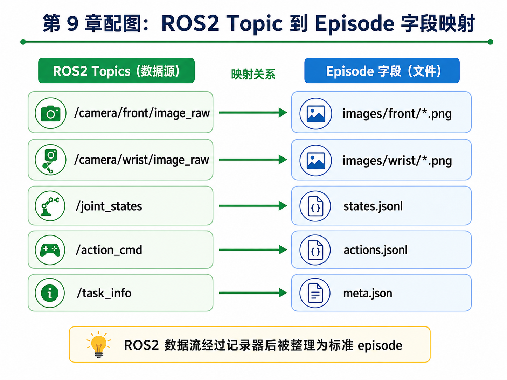

第 9 章：ROS2 最小知识体系：为数据采集服务
前一章我们已经知道，机器人学习的数据不能只会“生成”，还必须会“检查”。但当你真正从离线 toy 数据走向真实机器人系统时，很快就会碰到一个更现实的问题：这些图像、关节状态、动作命令、任务信息，究竟是通过什么方式在系统里流动的？
对于大多数现代机器人系统来说，这个答案就是 ROS2。不过，本章并不是一本完整的 ROS2 教程。我们的目标更聚焦：只讲那些为了数据采集与主线项目推进必须掌握的最小 ROS2 知识体系。
也就是说，我们关心 ROS2，不是为了背概念，而是为了回答这些问题：
- 什么是 node、topic、message？
- 相机图像、关节状态、动作命令应该分别挂在哪些 topic 上？
- 数据记录节点应该订阅哪些流？
- 主线项目从 ROS2 数据流到 episode 数据结构之间是什么关系？
如果说第 8 章解决的是“数据进来后怎么检查”，那么本章解决的就是“数据在系统里是怎么流过来的”。
1. 本章要解决的问题
本章重点解决以下问题：
- 什么是 node、topic、message、service、action、launch、parameter？
- 为什么 ROS2 是机器人数据采集的重要中间层？
- 主线项目中哪些信息适合放在 topic 上？
- 相机、关节状态、动作命令、任务解析节点之间如何通信？
- 数据记录节点在整体系统中扮演什么角色？
- ROS2 topic 与 episode 字段之间应该如何映射？
- 为什么时间戳在 ROS2 里同样关键？
- 如何用最小 pub/sub 示例理解数据流？
- 在没有 ROS2 运行环境时，如何用纯 Python 模拟这个过程？
2. 为什么这个问题重要
2.1 机器人系统本质上是分布式数据流系统
对于初学者来说，机器人很容易被误解成“一个程序控制一个机械臂”。但工程上，真实机器人系统通常由很多节点组成：
- 相机节点负责采图；
- 状态节点负责发布关节与末端状态；
- 任务解析节点负责解释任务指令；
- 控制节点负责发动作命令；
- 数据记录节点负责把多条数据流统一记录下来。
所以，从系统角度看，机器人更像一个分布式、异步、多模态数据流系统。ROS2 的价值就在于为这些模块提供了统一通信基础设施。
2.2 只会离线数据，不理解在线数据流，工程就接不上
前面几章我们使用的是离线生成的 episode，这对学习核心概念很有帮助。但如果你不理解数据在线是如何产生的，就很难继续推进：
- 不知道相机图像从哪里来；
- 不知道动作命令怎么广播给执行器；
- 不知道 recorder 为什么要订阅多个 topic；
- 不知道后续 rosbag 是怎么记录这些流的。
所以，本章是连接“离线学习世界”和“真实机器人系统世界”的桥梁。
2.3 ROS2 对自动驾驶工程师也并不陌生
如果你有自动驾驶背景，可以把 ROS2 topic 类比为：
- 一类轻量级、异步的消息总线；
- 类似各模块之间发布 / 订阅的实时数据流；
- 在概念上有点像多 topic 的车端 log 流。
当然，ROS2 还有更丰富的生态和节点管理能力，但从主线项目角度，这个类比足以帮助你快速建立直觉。
3. 核心概念
3.1 node：执行具体功能的进程
ROS2 中最重要的基本单元之一是 node。你可以把它理解为一个执行具体职责的进程或模块。例如：
camera_node：采集相机图像；robot_state_node：发布机器人关节状态；teleop_node：接收人工控制并发布动作指令；task_parser_node：解析任务输入；data_recorder_node：订阅多个 topic 并保存数据。
也就是说，node 回答的是：是谁在干这件事？
3.2 topic：节点之间异步传递数据的通道
topic 是 ROS2 中最常用的通信方式之一。它适合多对多、异步的数据分发。比如：
/camera/front/image_raw：前视相机图像；/camera/wrist/image_raw：腕部相机图像；/joint_states：关节状态；/action_cmd：动作命令；/task_info：任务解析结果。
topic 回答的是：数据通过哪条通道传递？
3.3 message：在 topic 中传递的数据格式
仅有 topic 名称还不够，还要知道“上面流动的数据长什么样”。这就是 message 的角色。例如：
- 图像用
sensor_msgs/Image； - 关节状态用
sensor_msgs/JointState； - 简单字符串命令可用
std_msgs/String； - 任务信息则可以定义自定义消息
TaskInfo.msg。
在主线项目中，我们新增了：
ros2_ws/src/shelf_demo_msgs/msg/TaskInfo.msg
它用于承载解析后的任务信息，例如 instruction、task_name、target_object、target_container。
3.4 service、action、launch、parameter 的最小理解
虽然本章重点是 topic，但还需要知道其他几个 ROS2 概念：
- service：更像一次请求 / 响应，适合短事务；
- action：适合需要反馈和可中断的长任务；
- launch：用于同时启动多个 node；
- parameter：用于配置 node 行为。
在主线项目当前阶段，topic 是最核心的；但从系统视角，你至少要知道这些概念的位置。
3.5 数据记录节点为什么重要
在具身学习项目里，data_recorder_node 往往是一个非常关键但容易被忽视的模块。它负责：
- 订阅多条 topic；
- 记录时间戳；
- 对齐不同模态；
- 最终将在线数据整理成 episode 或 rosbag 的基础材料。
所以 recorder 可以被看作连接“在线机器人系统”和“离线训练数据”的桥梁。
4. 概念图 / 流程图 / 架构图
4.1 图 9-1 ROS2 节点与 Topic 通信图

这张图展示了主线项目中的最小通信骨架：
camera_node发布图像；robot_state_node发布关节状态；teleop_node发布动作命令；task_parser_node解析任务并发布/task_info；data_recorder_node订阅这些数据并输出 episode dataset。
4.2 图 9-2 ROS2 Topic 到 Episode 字段映射

这张图非常关键，因为它直接把 ROS2 数据流和前面几章定义的 episode 结构连接了起来：
- 相机 topic →
images/*.png /joint_states→states.jsonl/action_cmd→actions.jsonl/task_info→meta.json
也就是说，它让“在线 topic 世界”和“离线 episode 世界”形成了明确映射关系。
4.3 Mermaid 图：最小 pub/sub 关系
flowchart LR
A[camera_node] -->|/camera/front/image_raw| E[data_recorder_node]
B[robot_state_node] -->|/joint_states| E
C[teleop_node] -->|/action_cmd| D[task_parser_node]
D -->|/task_info| E
4.4 Mermaid 图：ROS2 到 episode 的桥接
flowchart TD
A[ROS2 topics] --> B[data recorder]
B --> C[raw log / rosbag]
C --> D[episode dataset]
5. 工程化理解
5.1 topic 命名不是小事
主线项目中推荐的 topic 命名要尽量做到：
- 语义清楚；
- 层次一致；
- 便于扩展。
例如：
/camera/front/image_raw/camera/wrist/image_raw/joint_states/action_cmd/task_info
好的命名会直接降低后面 recorder 配置和 rosbag 记录时的心智成本。
5.2 为什么要先画通信图
当系统中节点多起来后，如果不先画通信图，很容易出现：
- 某个 topic 重复发布；
- recorder 忘订阅关键 topic；
- 某条 topic 的 message 类型选错；
- 某些数据需要 service / action，但你误用了 topic。
所以，通信图本身就是一种系统设计工具。
5.3 没有 ROS2 环境时如何学习
很多读者此时并没有完整 ROS2 环境。如果因为环境门槛过高而停住，就很可惜。因此，本章在主线项目中新增了一个纯 Python 的 mock pub/sub demo，让你先理解信息流，而不是先被环境细节拦住。
6. 主线项目中的位置
本章为主线项目新增：
robot-learning-shelf-demo/
ros2_ws/src/
shelf_demo_msgs/
msg/TaskInfo.msg
shelf_demo_data_recorder/
mock_ros2_pubsub_demo.py
launch/shelf_demo_record.launch.py
reports/
ch09_mock_ros2_demo.json
这些新增内容的作用是：
- 建立主线项目的最小 ROS2 topic 设计；
- 提供自定义消息示例；
- 提供 recorder 的教学版 mock demo；
- 为下一章 rosbag 记录与转换做准备。
7. 示例
7.1 示例 1：前视相机 topic
/camera/front/image_raw
sensor_msgs/Image
该 topic 用于传输前视 RGB 图像，是数据采集中的主要视觉观测源之一。最终它会对应到 episode 的 images/front/*.png。
7.2 示例 2：关节状态 topic
/joint_states
sensor_msgs/JointState
这条 topic 用于描述机器人当前的关节状态。对于主线项目，我们在教学版数据中更关心的是：末端位姿、夹爪状态、phase 等结构化信息。它们最终会被整理进 states.jsonl。
7.3 示例 3：动作命令 topic
/action_cmd
std_msgs/String 或自定义消息
在真实系统中，动作命令可能会更结构化；但在本章教学阶段，我们先用简化形式建立直觉：动作命令同样是系统中非常关键的一条数据流，它最终会映射到 actions.jsonl。
7.4 示例 4：任务解析 topic
任务指令可能来自人、来自上层规划器，也可能来自语言解析模块。经过 task_parser_node 处理后，形成 /task_info，最终进入 meta.json 或 episode 级元信息。
8. 练习代码
8.1 自定义消息示例
本章新增：
ros2_ws/src/shelf_demo_msgs/msg/TaskInfo.msg
内容示例：
string instruction
string task_name
string target_object
string target_container
8.2 最小 pub/sub 教学示例
运行方式：
cd robot-learning-shelf-demo
python ros2_ws/src/shelf_demo_data_recorder/mock_ros2_pubsub_demo.py --output_json reports/ch09_mock_ros2_demo.json
它不会依赖真实 ROS2 运行环境，而是用纯 Python 模拟：
- 发布图像消息；
- 发布关节状态；
- 发布动作命令；
- 发布任务信息；
- 由 recorder 汇总计数并生成报告。
9. 代码解释
9.1 为什么先做纯 Python mock
如果一开始就要求所有读者把 ROS2 环境装好、workspace 配好、依赖拉齐，学习节奏很容易被打断。本章通过 mock demo 先让你理解：
- topic 是什么；
- recorder 为什么要订阅多条流；
- 数据是如何被汇总的。
这是一种“先理解结构，再落地环境”的学习顺序。
9.2 TaskInfo.msg 的价值
很多初学者只会把任务当成一条字符串，但一旦进入工程场景，你就会发现：
instructiontask_nametarget_objecttarget_container
这些字段分开存，比塞进一句话更利于后续解析、记录和训练。自定义消息的存在，就是为了让系统里的信息表达更明确。
9.3 data_recorder_node 为什么是中心节点
在图 9-1 中你会发现，真正把系统串起来的，是 data_recorder_node。因为它是把：
- 图像流；
- 状态流；
- 动作流；
- 任务流；
汇聚起来的地方。没有 recorder，系统可以运行；但没有 recorder，就很难形成训练数据。
10. 常见错误
错误 1：把 ROS2 学成“术语背诵”
对主线项目来说，更重要的是理解 topic 与 recorder 的数据关系，而不是先背一堆命令。
错误 2：topic 设计没有围绕数据采集目标
很多 topic 设计看似完整，但和最终 episode 没有明确映射，后面会很混乱。
错误 3：没有统一时间戳策略
topic 可以异步，但记录时必须有统一时间基准，否则后面很难对齐。
错误 4：忽略任务信息流
只记录图像和关节状态，而忽略任务信息，会让训练样本缺少上下文。
错误 5：recorder 只是“存日志”，没有考虑后续转换
好的 recorder 设计，从一开始就会考虑后面如何转成 episode。
11. 本章练习
- 解释 topic 与 service 的区别；
- 为主线项目再设计 5 个可能有用的 topic；
- 扩展
TaskInfo.msg，增加session_id与operator_id； - 修改 mock demo，使 recorder 同时统计每个 topic 的首个与末个时间戳；
- 思考：为什么机器人数据采集需要时间戳？
12. 本章产出
本章应当产出：
- 一套主线项目最小 ROS2 topic 设计；
- 一个自定义消息示例；
- 一个纯 Python mock ROS2 pub/sub 教学示例；
- 对 recorder 节点角色的清晰理解；
- 对“ROS2 是数据采集基础设施”这一认识。
13. 小结
这一章最重要的结论可以概括成一句话：
对于具身智能项目来说，ROS2 最核心的价值之一，是把多模态、多节点的数据流组织成一个可记录、可扩展、可分析的系统。
理解了这一点，你就不会再把 ROS2 仅仅看成一个“机器人框架”，而会把它看成主线项目数据闭环中的通信骨架。
下一章，我们就顺势进入一个非常自然的问题：既然 topic 已经有了，数据也在系统里流动，那么如何把它们记录下来，并转成真正能用于训练的 episode？答案就是 rosbag 与数据记录流程。